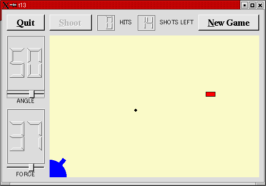

トップページ＞＞＞
「ぷろぐらみんぐ」目次＞＞＞
「Qt Tutorial Index Page」
Chapter 13: Game Over
初版作成：2002/01/10
- ソースコード
- 解説
- コンパイル・動作確認
- いじくりまわす
- 付録：lcdrange.h
- 付録：lcdrange.cpp
- 付録：cannon.h
- 付録：cannon.cpp
- 付録：gamebrd.h
- 付録：gamebrd.cpp
- 付録：main.cpp

今回の作例でようやく通常のゲームとしてプレイできるレベルに達します。スコア表示、残弾数制限、ゲームオーバー後の
ニューゲーム機能等です。
それに伴い、今まで MyWidget としてきたメインウィジェットを GameBoard と改名し、いくつかのスロットも加えます。
GameBoardクラスの定義を gamebrd.h に、実装をgamebrd.cpp にまとめます。
また、CannonFieldにゲームオーバーのステータスを付け足します。
またLCDRangeのレイアウトも修正がかかりました。
というわけで、今回 gamebrd.h, gamebrd.cpp が新たに加わり、また各ソースコードにかなり修正が加わっています。
といってもこれでほぼ完成に近づきつつありますので、最後の一踏ん張りと思って頑張りませう。
付録：lcdrange.h
付録：lcdrange.cpp
付録：cannon.h
付録：cannon.cpp
付録：gamebrd.h
付録：gamebrd.cpp
付録：main.cpp
目次に戻る
それでは各ファイルごとに、ポイント部分の解説を行っていきます。
lcdrange.h
#include <qwidget.h>
class QSlider;
class QLabel;
class LCDRange : public QWidget
QVBox からではなく QWidget から派生するように変更されます。
QVBox は確かに簡単に使えるのですが、徐々にレイアウト機能の限界も見え始めています。というわけで、ベースウィジェット
としてはQWidgetを用い、実際のレイアウトには QVBoxLayout を使うことにしました。QVBoxLayout はウィジェットではなく、
レイアウト機能のみを提供するクラスです。
lcdrange.cpp
#include <qlayout.h>
QVBoxLayout クラスを使用するためにヘッダファイルをインクルードしています。
LCDRange::LCDRange( QWidget *parent, const char *name )
: QWidget( parent, name )
QWidget からの標準的な派生です。
コンストラクタもそれに応じてだいぶ変わっています。
QVBoxLayout * l = new QVBoxLayout( this );
QVBoxLayoutをデフォルト値でこのウィジェット(もとはQWidget)に貼り付けます。
なお、ブラウザによっては縦棒に見えてしまうかもしれませんが、小文字のエルです。
l->addWidget( lcd, 1 );
一番上にQLCDNumberを配置します。ストレッチファクタは非ゼロです。
l->addWidget( slider );
l->addWidget( label );
スライダとラベルを加えています。ストレッチファクタはゼロです。
ストレッチファクタとゆーのはレイアウトクラス(QVBoxLayout, QHBoxLayout, QGridLayout)が提供する機能です。が、
これはQVBoxなどには実装されていません。今回の作例ではQLCDNumberのみ（親ウィジェットのサイズに応じて）広がり、他は
広がらないようにしています。
cannon.h
CannonFieldは今回でゲームオーバー状態を保持するようになります。関連してメソッドも新規に追加されました。
bool gameOver() const { return gameEnded; }
このメンバ関数はゲームオーバーだと TRUE を返します。ゲームが続行中だと FALSE を返します。
ゲームオーバーになる条件はただ一つです。残弾数がゼロになるとゲームオーバーです。
void setGameOver();
void restartGame();
ゲームオーバー状態にセットするスロット setGameOver() と、ゲームをリスタートする restartGame() スロットが新たに
加わりました。
void canShoot( bool );
この新しいシグナルは CannonField() が弾丸を発射中か否かを知らせます。後で、ShootボタンをEnableにしたりDisableに
したりするために使います。
bool gameEnded;
ゲームオーバーの状態を保持するプライベートメンバです。TRUEだとゲームオーバーです。FALSEだとゲームは続行中です。
cannon.cpp
gameEnded = FALSE;
コンストラクタに上の一行が加わっています。初期状態ではゲームオーバーにはなってません。
void CannonField::shoot()
{
if ( isShooting() )
return;
timerCount = 0;
shoot_ang = ang;
shoot_f = f;
autoShootTimer->start( 50 );
emit canShoot( FALSE );
}
isShooting()を追加しており、使用しています。タイマーの状態を調べる部分を（他の箇所でも使われるようになったため）分離
して関数化しました。また、shoot()は canShoot(FALSE)シグナルを発生させて現在弾丸が発射中であることを外界に知らせています。
gamebrd.cpp中で canShootシグナルはShootボタンの setEnabled(bool) スロットに接続されているため、これによってShootボタン
のEnable/Disableを FALSE ですので Disableにしています。
void CannonField::setGameOver()
{
if ( gameEnded )
return;
if ( isShooting() )
autoShootTimer->stop();
gameEnded = TRUE;
repaint();
}
このスロットはゲームオーバーにするためのものです。
なんでわざわざゲームオーバーにするのをスロットにするの？当たり判定の部分に含めりゃいいんじゃない？とか思われる方も
いると思います。かくいう私も最初この意義が分かりませんでした。
しかしですね。コンポーネント化という観点から考えるとゲームオーバーにする実装を当たり判定とかに組み込んでしまう
と後々めんどくさくなる可能性もあるわけですよ。たとえば本格的なシューティングゲームにするなら、自機が被弾したときも
ゲームオーバーにする必要があります。
自機の被弾時を考えるならば、メンバ関数にするだけで良いんでないの？と考えられる向きもありますが、せっかくQtを選んだ
のですからスロットにしてしまいましょう！！
スロット化すれば、外部からの様々な条件に応じたシグナルをコネクトできるようになり、ゲームオーバーにする条件の幅が
広がります。またこうしておくことによって、インターフェイスをすっきりと（した感じに）することが出来ます。
とにかく、こうした「イベントとそれに対する対応」みたような部分はシグナルとスロットに分離しておくことにより、
アプリケーションのフレームワークの一貫性とコンポーネントの独立性が保てます。
今回の作例ではゲームオーバーなら何もせずにすぐ戻ります。ゲームオーバーでないなら弾丸を停止し（タイマーをストップ）、
ゲームオーバーの状態を保持する gameEnded を TRUE にします。んで、ウィジェット全体を再描画します。
void CannonField::restartGame()
{
if ( isShooting() )
autoShootTimer->stop();
gameEnded = FALSE;
repaint();
emit canShoot( TRUE );
}
このスロットはゲームをリスタートするためのものです。
もし弾丸が発射中なら停止させ、さらにゲームオーバーステータスも gameEnded=FALSE にします。んでもってウィジェット
全体を再描画させた後、canShoot()をTRUEで送出します。
canShoot(TRUE)のemitにより、Shootボタンが使用可能になります。
また、moveShoot()中でも標的に着弾したときや画面外に飛び抜けてしまった場合、canShoot(TRUE)を送出してボタンを使用可能に
戻しています。
void CannonField::paintEvent( QPaintEvent *e )
{
QRect updateR = e->rect();
QPainter p( this );
if ( gameEnded ) {
p.setPen( black );
p.setFont( QFont( "Courier", 48, QFont::Bold ) );
p.drawText( rect(), AlignCenter, "Game Over" );
}
ペイントイベントはゲームオーバーの時に画面中央に"Game Over"の文字を表示するための拡張が施されています。
そのときは特に再描画矩形のチェックは行っていません。まあ、ゲームオーバーの時ですからしなくても問題無いんでしょう。
フォントに関するTipsですが、Xで動いているUnicodeフォントなどは大きいサイズのフォントをローディングするのに時間が
結構かかります。Qtはフォントをキャッシュしてくれていますので、フォントの読み込みによる待ち時間は初回時のみ発生します。
if ( updateR.intersects( cannonRect() ) )
paintCannon( &p );
if ( isShooting() && updateR.intersects( shotRect() ) )
paintShot( &p );
if ( !gameEnded && updateR.intersects( targetRect() ) )
paintTarget( &p );
}
弾丸は発射中のみ。標的はゲーム中のみ描画させるようにしています。
gamebrd.h
これは新規のものです。前回までMyWidgetとしてきたクラスを GameBoard クラスとして宣言しています。
class QPushButton;
class LCDRange;
class QLCDNumber;
class CannonField;
#include "lcdrange.h"
#include "cannon.h"
class GameBoard : public QWidget
{
Q_OBJECT
public:
GameBoard( QWidget *parent=0, const char *name=0 );
protected slots:
void fire();
void hit();
void missed();
void newGame();
private:
QLCDNumber *hits;
QLCDNumber *shotsLeft;
CannonField *cannonField;
};
四つのスロットを追加しています。内部でのみ使いますのでprotectedにしておきました。また、QLCDNumberの hits と shotsLeft
も加わります。前者が標的撃破数、後者が残弾数を表示するためのものです。
gamebrd.cpp
これも新規ファイルです。前回まで MyWidget クラスだったのを GameBoard クラスと改名し、その実装部分をまとめています。
cannonField = new CannonField( this, "cannonField" );
cannonField が正式なメンバ変数になりました。そのためコンストラクタも修正されます。
connect( cannonField, SIGNAL(hit()),
this, SLOT(hit()) );
connect( cannonField, SIGNAL(missed()),
this, SLOT(missed()) );
残弾数や撃破数の処理が追加されましたので、CannonFieldの hit() シグナルや missed() シグナルを捕まえてそれらの
増減をしなければなりません。というわけで、hit() シグナルが送られてきたときは GameBoard::hit()シグナルに流して
撃破数をインクリメント。んで残弾数チェックしてゼロなら CannonField::setGameOver()呼んでます。missed()シグナルなら
単に残弾数のチェックへ直行します。hit(), missed()両スロットはprotectedにしています。
connect( shoot, SIGNAL(clicked()), SLOT(fire()) );
前回まではShootボタンのclicked()シグナルを直接CannonFieldのshootスロットに流していました。
今回は残弾数をデクリメントする必要がありますので、一旦GameBoard::fire() スロットに流し、fire()スロット内で
改めてCannonField::shoot()を呼んでいます。
・・・あれ？スロットって、普通の関数のようにも使えたんだ。
connect( cannonField, SIGNAL(canShoot(bool)),
shoot, SLOT(setEnabled(bool)) );
んで、canShoot()シグナルが送られてきたらShootボタンの setEnabled() スロットに流して、ボタンの使用可能・不可能を
切り替えてあげます。
QPushButton *restart
= new QPushButton( "&New Game", this, "newgame" );
restart->setFont( QFont( "Times", 18, QFont::Bold ) );
connect( restart, SIGNAL(clicked()), this, SLOT(newGame()) );
んで、リスタートボタンを追加してます。このボタンのclicked()シグナルはこのウィジェットのnewGame()スロットに
流れるようにしています。
hits = new QLCDNumber( 2, this, "hits" );
shotsLeft = new QLCDNumber( 2, this, "shotsleft" );
QLabel *hitsL = new QLabel( "HITS", this, "hitsLabel" );
QLabel *shotsLeftL
= new QLabel( "SHOTS LEFT", this, "shotsleftLabel" );
四つのウィジェットを追加してます。QLabelに関しては表示内容を更新する必要はないので、ポインタは捨て置きです。
QtはGameBoardが破棄されたときその子ウィジェットも自動的に破棄してくれます。んで、レイアウトクラスも自動的に
サイズ調整されます。
QHBoxLayout *topBox = new QHBoxLayout;
grid->addLayout( topBox, 0, 1 );
topBox->addWidget( shoot );
topBox->addWidget( hits );
topBox->addWidget( hitsL );
topBox->addWidget( shotsLeft );
topBox->addWidget( shotsLeftL );
topBox->addStretch( 1 );
topBox->addWidget( restart );
というわけで、Shootボタンや残弾数表示などをレイアウトに追加してます。
newGame();
}
コンストラクタで一通り終われば newGame() スロットを直呼び（すげー略称）でゲームスタートにします。
void GameBoard::fire()
{
if ( cannonField->gameOver() || cannonField->isShooting() )
return;
shotsLeft->display( shotsLeft->intValue() - 1 );
cannonField->shoot();
}
これは弾丸発射時に呼び出されるスロットです。ゲームオーバー状態ならすぐ戻ってます。
残弾数をデクリメントしてます。残弾数をメンバ変数などにせず、もうQLCDNumberの保持する値に任せてしまっています。んで、
CannonField::shoot()スロットを直呼びしてます。
void GameBoard::hit()
{
hits->display( hits->intValue() + 1 );
if ( shotsLeft->intValue() == 0 )
cannonField->setGameOver();
else
cannonField->newTarget();
}
弾丸が標的に着弾したときに呼び出されるように作ったスロットです。撃破数のインクリメント、残弾数のチェックを行い
ゲームオーバー、またはnewTarget()で新しい標的を作らせています。
void GameBoard::missed()
{
if ( shotsLeft->intValue() == 0 )
cannonField->setGameOver();
}
こっちは単に残弾数のチェックとゲームオーバーの発生です。
void GameBoard::newGame()
{
shotsLeft->display( 15 );
hits->display( 0 );
cannonField->restartGame();
cannonField->newTarget();
}
このスロットはNewGameボタンをクリックすると呼び出されるようになっています。
コンストラクタからも呼び出されています。
最初に残弾数を１５発にして、撃破数をゼロにします。
続いてCannonField::restartGame()スロットを直呼びしてゲームオーバー状態をクリア。
んでもってCannonField::newTarget()スロットを直呼びして新しい標的を描画しています。
main.cpp
前回までの main.cpp から MyWidget を取り払ったものです。そのため、main()関数のみという非常にシンプルな構成に
なっています。
/usr/lib/qt/examples/ディレクトリ以下に(TLXW8の場合)納められているサンプルプログラム中、大きめのサンプルはまず間違いな
く今回の作例のような構成になっています。メインウィジェットも分離されてしまい、main.cppを非常にシンプルに構成する
ようになっています。
目次に戻る
んじゃあ、コンパイルしてみましょう。
[fenjin@seisyuu t13]$ ls
cannon.cpp gamebrd.cpp lcdrange.cpp main.cpp
cannon.h gamebrd.h lcdrange.h
[fenjin@seisyuu t13]$ progen -n t13 -o t13.pro
[fenjin@seisyuu t13]$ tmake -o Makefile t13.pro
[fenjin@seisyuu t13]$ make
g++ -c -pipe -Wall -W -O2 -DNO_DEBUG -I/usr/lib/qt/include -o cannon.o cannon.cpp
g++ -c -pipe -Wall -W -O2 -DNO_DEBUG -I/usr/lib/qt/include -o gamebrd.o gamebrd.cpp
g++ -c -pipe -Wall -W -O2 -DNO_DEBUG -I/usr/lib/qt/include -o lcdrange.o lcdrange.cpp
g++ -c -pipe -Wall -W -O2 -DNO_DEBUG -I/usr/lib/qt/include -o main.o main.cpp
/usr/lib/qt/bin/moc cannon.h -o moc_cannon.cpp
g++ -c -pipe -Wall -W -O2 -DNO_DEBUG -I/usr/lib/qt/include -o moc_cannon.o moc_cannon.cpp
/usr/lib/qt/bin/moc gamebrd.h -o moc_gamebrd.cpp
g++ -c -pipe -Wall -W -O2 -DNO_DEBUG -I/usr/lib/qt/include -o moc_gamebrd.o moc_gamebrd.cpp
/usr/lib/qt/bin/moc lcdrange.h -o moc_lcdrange.cpp
g++ -c -pipe -Wall -W -O2 -DNO_DEBUG -I/usr/lib/qt/include -o moc_lcdrange.o moc_lcdrange.cpp
g++ -o t13 cannon.o gamebrd.o lcdrange.o main.o moc_cannon.o moc_gamebrd.o moc_lcdrange.o
-L/usr/lib/qt/lib -L/usr/X11R6/lib -lqt -lXext -lX11 -lm
[fenjin@seisyuu t13]$ ls
Makefile gamebrd.cpp lcdrange.h moc_cannon.cpp moc_lcdrange.cpp
cannon.cpp gamebrd.h lcdrange.o moc_cannon.o moc_lcdrange.o
cannon.h gamebrd.o main.cpp moc_gamebrd.cpp t13*
cannon.o lcdrange.cpp main.o moc_gamebrd.o t13.pro
んで、実行ファイル t13 を実行すると冒頭に示したようなウインドウが表示されるわけです。
Shoot ボタンをクリックすると黒い矩形の弾丸が発射されます。赤いブロックはランダムな実行するたびにランダムな位置に
出現します。
弾丸はブロックとぶつかると消滅します。かといってブロックまでは消えません。
残弾数とヒット数が上部に表示されます。New Game ボタンをクリックするとゲームがリスタートします。
左上のQuitボタンをクリックするとアプリケーションは終了します。
目次に戻る
つかれたので、パス（爆）。
次のChapterにてあいませう。いよいよ最終Chapterです。
目次に戻る
#ifndef LCDRANGE_H
#define LCDRANGE_H
#include <qwidget.h>
class QSlider;
class QLabel;
class LCDRange : public QWidget
{
Q_OBJECT
public:
LCDRange( QWidget *parent=0, const char *name=0 );
LCDRange( const char *s, QWidget *parent=0, const char *name=0 );
int value() const;
const char *text() const;
public slots:
void setValue( int );
void setRange( int minVal, int maxVal );
void setText( const char * );
signals:
void valueChanged( int );
private:
void init();
QSlider *slider;
QLabel *label;
};
#endif // LCDRANGE_H
目次に戻る
#include "lcdrange.h"
#include <qslider.h>
#include <qlcdnumber.h>
#include <qlabel.h>
#include <qlayout.h>
LCDRange::LCDRange( QWidget *parent, const char *name )
: QWidget( parent, name )
{
init();
}
LCDRange::LCDRange( const char *s, QWidget *parent, const char *name )
: QWidget( parent, name )
{
init();
setText( s );
}
void LCDRange::init()
{
QLCDNumber *lcd = new QLCDNumber( 2, this, "lcd" );
slider = new QSlider( Horizontal, this, "slider" );
slider->setRange( 0, 99 );
slider->setValue( 0 );
label = new QLabel( " ", this, "label" );
label->setAlignment( AlignCenter );
connect( slider, SIGNAL(valueChanged(int)),
lcd, SLOT(display(int)) );
connect( slider, SIGNAL(valueChanged(int)),
SIGNAL(valueChanged(int)) );
setFocusProxy( slider );
QVBoxLayout * l = new QVBoxLayout( this );
l->addWidget( lcd, 1 );
l->addWidget( slider );
l->addWidget( label );
}
int LCDRange::value() const
{
return slider->value();
}
const char *LCDRange::text() const
{
return label->text();
}
void LCDRange::setValue( int value )
{
slider->setValue( value );
}
void LCDRange::setRange( int minVal, int maxVal )
{
if ( minVal < 0 || maxVal > 99 || minVal > maxVal ) {
qWarning( "LCDRange::setRange(%d,%d)\n"
"\tRange must be 0..99\n"
"\tand minVal must not be greater than maxVal",
minVal, maxVal );
return;
}
slider->setRange( minVal, maxVal );
}
void LCDRange::setText( const char *s )
{
label->setText( s );
}
目次に戻る
#ifndef CANNON_H
#define CANNON_H
class QTimer;
#include <qwidget.h>
class CannonField : public QWidget
{
Q_OBJECT
public:
CannonField( QWidget *parent=0, const char *name=0 );
int angle() const { return ang; }
int force() const { return f; }
bool gameOver() const { return gameEnded; }
bool isShooting() const;
QSizePolicy sizePolicy() const;
public slots:
void setAngle( int degrees );
void setForce( int newton );
void shoot();
void newTarget();
void setGameOver();
void restartGame();
private slots:
void moveShot();
signals:
void hit();
void missed();
void angleChanged( int );
void forceChanged( int );
void canShoot( bool );
protected:
void paintEvent( QPaintEvent * );
private:
void paintShot( QPainter * );
void paintTarget( QPainter * );
void paintCannon( QPainter * );
QRect cannonRect() const;
QRect shotRect() const;
QRect targetRect() const;
int ang;
int f;
int timerCount;
QTimer * autoShootTimer;
float shoot_ang;
float shoot_f;
QPoint target;
bool gameEnded;
};
#endif // CANNON_H
目次に戻る
#include "cannon.h"
#include <qtimer.h>
#include <qpainter.h>
#include <qpixmap.h>
#include <qdatetime.h>
#include <math.h>
#include <stdlib.h>
CannonField::CannonField( QWidget *parent, const char *name )
: QWidget( parent, name )
{
ang = 45;
f = 0;
timerCount = 0;
autoShootTimer = new QTimer( this, "movement handler" );
connect( autoShootTimer, SIGNAL(timeout()),
this, SLOT(moveShot()) );
shoot_ang = 0;
shoot_f = 0;
target = QPoint( 0, 0 );
gameEnded = FALSE;
setPalette( QPalette( QColor( 250, 250, 200) ) );
newTarget();
}
void CannonField::setAngle( int degrees )
{
if ( degrees < 5 )
degrees = 5;
if ( degrees > 70 )
degrees = 70;
if ( ang == degrees )
return;
ang = degrees;
repaint( cannonRect(), FALSE );
emit angleChanged( ang );
}
void CannonField::setForce( int newton )
{
if ( newton < 0 )
newton = 0;
if ( f == newton )
return;
f = newton;
emit forceChanged( f );
}
void CannonField::shoot()
{
if ( isShooting() )
return;
timerCount = 0;
shoot_ang = ang;
shoot_f = f;
autoShootTimer->start( 50 );
emit canShoot( FALSE );
}
void CannonField::newTarget()
{
static bool first_time = TRUE;
if ( first_time ) {
first_time = FALSE;
QTime midnight( 0, 0, 0 );
srand( midnight.secsTo(QTime::currentTime()) );
}
QRegion r( targetRect() );
target = QPoint( 200 + rand() % 190,
10 + rand() % 255 );
repaint( r.unite( targetRect() ) );
}
void CannonField::setGameOver()
{
if ( gameEnded )
return;
if ( isShooting() )
autoShootTimer->stop();
gameEnded = TRUE;
repaint();
}
void CannonField::restartGame()
{
if ( isShooting() )
autoShootTimer->stop();
gameEnded = FALSE;
repaint();
emit canShoot( TRUE );
}
void CannonField::moveShot()
{
QRegion r( shotRect() );
timerCount++;
QRect shotR = shotRect();
if ( shotR.intersects( targetRect() ) ) {
autoShootTimer->stop();
emit hit();
emit canShoot( TRUE );
} else if ( shotR.x() > width() || shotR.y() > height() ) {
autoShootTimer->stop();
emit missed();
emit canShoot( TRUE );
} else {
r = r.unite( QRegion( shotR ) );
}
repaint( r );
}
void CannonField::paintEvent( QPaintEvent *e )
{
QRect updateR = e->rect();
QPainter p( this );
if ( gameEnded ) {
p.setPen( black );
p.setFont( QFont( "Courier", 48, QFont::Bold ) );
p.drawText( rect(), AlignCenter, "Game Over" );
}
if ( updateR.intersects( cannonRect() ) )
paintCannon( &p );
if ( isShooting() && updateR.intersects( shotRect() ) )
paintShot( &p );
if ( !gameEnded && updateR.intersects( targetRect() ) )
paintTarget( &p );
}
void CannonField::paintShot( QPainter *p )
{
p->setBrush( black );
p->setPen( NoPen );
p->drawRect( shotRect() );
}
void CannonField::paintTarget( QPainter *p )
{
p->setBrush( red );
p->setPen( black );
p->drawRect( targetRect() );
}
const QRect barrelRect(33, -4, 15, 8);
void CannonField::paintCannon( QPainter *p )
{
QRect cr = cannonRect();
QPixmap pix( cr.size() );
pix.fill( this, cr.topLeft() );
QPainter tmp( &pix );
tmp.setBrush( blue );
tmp.setPen( NoPen );
tmp.translate( 0, pix.height() - 1 );
tmp.drawPie( QRect( -35,-35, 70, 70 ), 0, 90*16 );
tmp.rotate( -ang );
tmp.drawRect( barrelRect );
tmp.end();
p->drawPixmap( cr.topLeft(), pix );
}
QRect CannonField::cannonRect() const
{
QRect r( 0, 0, 50, 50 );
r.moveBottomLeft( rect().bottomLeft() );
return r;
}
QRect CannonField::shotRect() const
{
const double gravity = 4;
double time = timerCount / 4.0;
double velocity = shoot_f;
double radians = shoot_ang*3.14159265/180;
double velx = velocity*cos( radians );
double vely = velocity*sin( radians );
double x0 = ( barrelRect.right() + 5 )*cos(radians);
double y0 = ( barrelRect.right() + 5 )*sin(radians);
double x = x0 + velx*time;
double y = y0 + vely*time - 0.5*gravity*time*time;
QRect r = QRect( 0, 0, 6, 6 );
r.moveCenter( QPoint( qRound(x), height() - 1 - qRound(y) ) );
return r;
}
QRect CannonField::targetRect() const
{
QRect r( 0, 0, 20, 10 );
r.moveCenter( QPoint(target.x(),height() - 1 - target.y()) );
return r;
}
bool CannonField::isShooting() const
{
return autoShootTimer->isActive();
}
QSizePolicy CannonField::sizePolicy() const
{
return QSizePolicy( QSizePolicy::Expanding, QSizePolicy::Expanding );
}
目次に戻る
#ifndef GAMEBRD_H
#define GAMEBRD_H
#include <qwidget.h>
class QPushButton;
class LCDRange;
class QLCDNumber;
class CannonField;
#include "lcdrange.h"
#include "cannon.h"
class GameBoard : public QWidget
{
Q_OBJECT
public:
GameBoard( QWidget *parent=0, const char *name=0 );
protected slots:
void fire();
void hit();
void missed();
void newGame();
private:
QLCDNumber *hits;
QLCDNumber *shotsLeft;
CannonField *cannonField;
};
#endif // GAMEBRD_H
目次に戻る
#include "gamebrd.h"
#include <qfont.h>
#include <qapplication.h>
#include <qlabel.h>
#include <qpushbutton.h>
#include <qlcdnumber.h>
#include <qlayout.h>
#include "lcdrange.h"
#include "cannon.h"
GameBoard::GameBoard( QWidget *parent, const char *name )
: QWidget( parent, name )
{
QPushButton *quit = new QPushButton( "&Quit", this, "quit" );
quit->setFont( QFont( "Times", 18, QFont::Bold ) );
connect( quit, SIGNAL(clicked()), qApp, SLOT(quit()) );
LCDRange *angle = new LCDRange( "ANGLE", this, "angle" );
angle->setRange( 5, 70 );
LCDRange *force = new LCDRange( "FORCE", this, "force" );
force->setRange( 10, 50 );
cannonField = new CannonField( this, "cannonField" );
connect( angle, SIGNAL(valueChanged(int)),
cannonField, SLOT(setAngle(int)) );
connect( cannonField, SIGNAL(angleChanged(int)),
angle, SLOT(setValue(int)) );
connect( force, SIGNAL(valueChanged(int)),
cannonField, SLOT(setForce(int)) );
connect( cannonField, SIGNAL(forceChanged(int)),
force, SLOT(setValue(int)) );
connect( cannonField, SIGNAL(hit()),
this, SLOT(hit()) );
connect( cannonField, SIGNAL(missed()),
this, SLOT(missed()) );
QPushButton *shoot = new QPushButton( "&Shoot", this, "shoot" );
shoot->setFont( QFont( "Times", 18, QFont::Bold ) );
connect( shoot, SIGNAL(clicked()), SLOT(fire()) );
connect( cannonField, SIGNAL(canShoot(bool)),
shoot, SLOT(setEnabled(bool)) );
QPushButton *restart
= new QPushButton( "&New Game", this, "newgame" );
restart->setFont( QFont( "Times", 18, QFont::Bold ) );
connect( restart, SIGNAL(clicked()), this, SLOT(newGame()) );
hits = new QLCDNumber( 2, this, "hits" );
shotsLeft = new QLCDNumber( 2, this, "shotsleft" );
QLabel *hitsL = new QLabel( "HITS", this, "hitsLabel" );
QLabel *shotsLeftL
= new QLabel( "SHOTS LEFT", this, "shotsleftLabel" );
QGridLayout *grid = new QGridLayout( this, 2, 2, 10 );
grid->addWidget( quit, 0, 0 );
grid->addWidget( cannonField, 1, 1 );
grid->setColStretch( 1, 10 );
QVBoxLayout *leftBox = new QVBoxLayout;
grid->addLayout( leftBox, 1, 0 );
leftBox->addWidget( angle );
leftBox->addWidget( force );
QHBoxLayout *topBox = new QHBoxLayout;
grid->addLayout( topBox, 0, 1 );
topBox->addWidget( shoot );
topBox->addWidget( hits );
topBox->addWidget( hitsL );
topBox->addWidget( shotsLeft );
topBox->addWidget( shotsLeftL );
topBox->addStretch( 1 );
topBox->addWidget( restart );
angle->setValue( 60 );
force->setValue( 25 );
angle->setFocus();
newGame();
}
void GameBoard::fire()
{
if ( cannonField->gameOver() || cannonField->isShooting() )
return;
shotsLeft->display( shotsLeft->intValue() - 1 );
cannonField->shoot();
}
void GameBoard::hit()
{
hits->display( hits->intValue() + 1 );
if ( shotsLeft->intValue() == 0 )
cannonField->setGameOver();
else
cannonField->newTarget();
}
void GameBoard::missed()
{
if ( shotsLeft->intValue() == 0 )
cannonField->setGameOver();
}
void GameBoard::newGame()
{
shotsLeft->display( 15 );
hits->display( 0 );
cannonField->restartGame();
cannonField->newTarget();
}
目次に戻る
#include <qapplication.h>
#include "gamebrd.h"
int main( int argc, char **argv )
{
QApplication::setColorSpec( QApplication::CustomColor );
QApplication a( argc, argv );
GameBoard gb;
gb.setGeometry( 100, 100, 500, 355 );
a.setMainWidget( &gb );
gb.show();
return a.exec();
}
目次に戻る
トップページ＞＞＞
「ぷろぐらみんぐ」目次＞＞＞
「Qt Tutorial Index Page」